You can watch the video,
related on "Good health and Well-being"
Watching the video.
According to data from the United Nations, millions of people die every year due to lack of access to medicine or medical care. This is why improving the health and well-being of all people on the planet is of the utmost importance, so much so that it is the third sustainable development goal.
In recent decades there have been many advances that have increased life expectancy.
Smile and Learn-Good Health and Well-being
Target
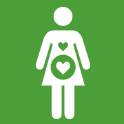
By 2030, reduce the global maternal mortality ratio to less than 70 per 100,000 live births.
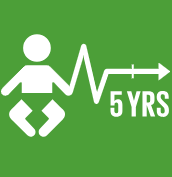
By 2030, end preventable deaths of newborns and children under 5 years of age, with all countries aiming to reduce neonatal mortality to at least as low as 12 per 1,000 live births and under-5 mortality to at least as low as 25 per 1,000 live births.
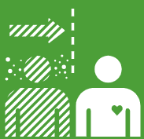
By 2030, end the epidemics of AIDS, tuberculosis, malaria and neglected tropical diseases and combat hepatitis, water-borne diseases and other communicable diseases.
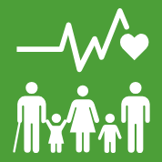
By 2030, reduce by one third premature mortality from non-communicable diseases through prevention and treatment and promote mental health and well-being.
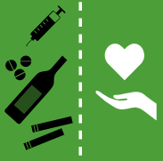
3.5 Strengthen the prevention and treatment of substance abuse, including narcotic drug abuse and harmful use of alcohol.
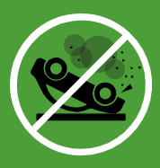
By 2020, halve the number of global deaths and injuries from road traffic accidents.
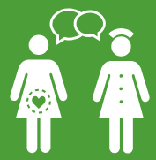
By 2030, ensure universal access to sexual and reproductive health-care services, including for family planning, information and education, and the integration of reproductive health into national strategies and programmes.
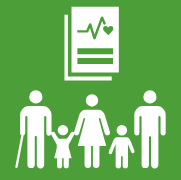
Achieve universal health coverage, including financial risk protection, access to quality essential health-care services and access to safe, effective, quality and affordable essential medicines and vaccines for all.
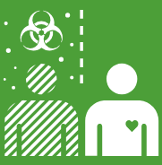
By 2030, substantially reduce the number of deaths and illnesses from hazardous chemicals and air, water and soil pollution and contamination.
Strengthen the implementation of the World Health Organization Framework Convention on Tobacco Control in all countries, as appropriate.
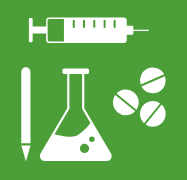
Support the research and development of vaccines and medicines for the communicable and noncommunicable diseases that primarily affect developing countries, provide access to affordable essential medicines and vaccines, in accordance with the Doha Declaration on the TRIPS Agreement and Public Health, which affirms the right of developing countries to use to the full the provisions in the Agreement on Trade Related Aspects of Intellectual Property Rights regarding flexibilities to protect public health, and, in particular, provide access to medicines for all.
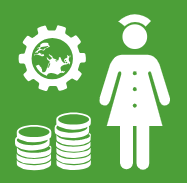
Substantially increase health financing and the recruitment, development, training and retention of the health workforce in developing countries, especially in least developed countries and small island developing States.
Strengthen the capacity of all countries, in particular developing countries, for early warning, risk reduction and management of national and global health risks.
Solution
Increasing support to mental health
During the last century, major efforts have been deployed to promote physical health.
Tackling mental health challenges, however, is still lagging behind.
According to the World Health Organization, mental challenges account for 47% of disability in life, calculated in the number of days during which people are unable to function normally in their daily life
(depression 17%, other psychiatric conditions 12%, alcohol and drug addiction 10%, Alzheimer’s 8%), compared with 8% for respiratory diseases, 5% for cardiovascular diseases and 2% for cancer.
However, addressing mental ailments account for only a small part of the health budget of developed nations (about 10%).
Cooperation
Even if competition is generally more visible and more spectacular than cooperation, recent work has shown that evolution must involve cooperation to create higher levels of organization.
It seems that today we need to move to the next level of cooperation to face the many challenges of our times.
In strongly competitive societies, individuals do not trust one another, they worry about their safety and they constantly seek to promote their own interests and social status without much concern for others. On the other hand, in cooperative societies, individuals trust one another and are prepared to devote time and resources to others.
This sets in motion a virtuous cycle of solidarity and reciprocity that nurtures harmonious relationships.
Caring economics
There are two types of problems that the homo economicus, or economic human, whose only goal is to promote his selfish interest, will never resolve: collective goods and poverty in the midst of plenty.
To solve these problems we need to bring about the voice of care and altruism. The economy must exist to serve society, not to be served by society.
It must also benefit society as a whole.
A healthy economy must not give way to disproportionate inequality.
This does not refer to the natural forms of disparity that are manifest in any human community, but rather extreme inequality that derives not from people’s actual dispositions but from the economic and political systems that are skewed to promote this iniquity.
None of this is inevitable – economic choices are, of course, value-driven – and it is possible to set a different course, provided popular and political will exists.
Even in the world of economics, the respect for human values exemplified by altruism is not an idealistic dream but a pragmatic expression of the best way to achieve a fair economy and long-term harmony.
Promoting altruism
Our era is confronted with many challenges, among them the imperative of reconciling the demands of three timescales – short, middle and long term, on which three types of interests are superimposed: ours, the interests of those close to us, and those of all sentient beings.
In the short term, we must respond to the immediate demands of the present economy; in the middle term, the search for happiness; and in the long term, the health of the environment and future generations.
We are faced with an economy that is evolving at an ever-faster pace.
Those who live well are often reluctant to alter their lifestyle for the good of the needy and the benefit of generations to come.
Those in poverty aspire not only to what they legitimately need to live a decent life but also to enter into the consumer culture, which pressures everyone to constantly pursue material things they don’t need.
Happiness and satisfaction are measured in terms of a generation, encompassing our life plan, our career and our family.
Whether or not we are happy depends not only on external conditions but also on the ways in which our mind interprets these conditions as happiness or misery.
As for the environment, until recently its evolution has been measured in terms of geological and climatic eras, over millions of years. In our day, the rhythm of change keeps accelerating because of ecological upheavals provoked by human activities.
In particular, the “Great Acceleration” that has occurred since 1950 has defined a new era, called the Anthropocene (“era of humans”), in which, for the first time in history, human activities are profoundly modifying (and currently degrading) the entire system that maintains life on earth.
This completely new challenge has taken us by surprise.
If our obsession with achieving quantitative growth continues, with consumption of natural resources increasing at its current exponential rate, we will need three planets by 2050. We don’t have them.
What can we do about this predicament? Only a unifying concept will lead us out of this complex maze of preoccupations.
Altruism, – that is, having more considerations for others – is the Ariadne’s thread allowing us to connect harmoniously the challenges of the economy in the short term, quality of life in the medium term and our future generations in the long term.
A new economic harmony
The respect for human values embodied in altruism is not an idealistic dream but a pragmatic expression of how best to achieve a sustainable harmony.
The term “sustainable development” can be wrongly understood as referring only to quantitative growth, which is no more sustainable since infinite quantitative growth requires an ever-greater use of a finite ecosystem.
The middle way between quantitative growth and decline can be found in sustainable harmony; in other words, a situation that guarantees everyone a decent way of life and reduces inequality at the same time as ceasing to exploit the planet at such a drastic rate.
To bring about and maintain this harmony, we must on the one hand lift a billion people out of poverty as soon as possible and, on the other, reduce the excessive and unnecessary consumption in rich countries.
We must also gain awareness of the fact that unbridled material growth is not remotely necessary for our well-being.
The Sustainable Development Goals are the beginning of this road to enlightenment.
Things to do
Find a Goal 3 charity you want to support. Any donation, big or small, can make a difference!
Vaccinate yourself and your kids. Protecting your family from disease also aids public health.
Place yourself on the organ and tissue donors’ registry in your country.